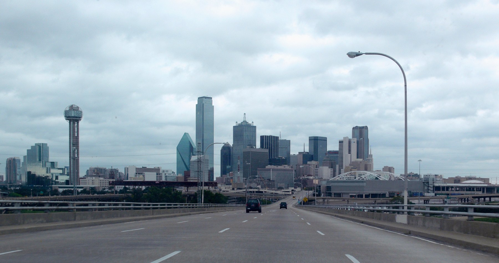

One city.
A different day
on every block.
Choose a neighborhood, stay a little longer, and discover Dallas beyond a list of landmarks.
Find your next outing
The field guide
Four ways to start · September 2026 edition
A browsing-first afternoon in Bishop Arts
Spend a small afternoon among independent shops, galleries, and a meal of your choosing.
Read the guide02ART & CULTUREBuild a Dallas Arts District day around one exhibition
Give one museum your attention, then decide how much more the day needs.
Read the guide03MUSIC & STREET LIFEDeep Ellum: choose the music, then plan the night
A focused way to turn a neighborhood evening into a night that suits your taste.
Read the guide04EAST DALLASA simple White Rock Lake reset
Trade a crowded itinerary for a short lakeside outing with a clear starting point.
Read the guideAbout Dallas, By District
An independent guide for people who live in or visit Dallas–Fort Worth. We combine verified destination information with original suggestions for spending your time. Each article links to an official source so you can check the details before you go.
We do not represent a city, tourism office, or featured business. This publication is part of the same independently owned group as Frisco Fieldnotes, Plano Days, Dallas, By District, The Fort Worth Edit, and DFW Outside. We link between guides when the next destination is relevant.
No paid placements or affiliate links appear in this edition. Future sponsored or affiliate content will be identified where it appears. No booking service or newsletter signup is offered here.
Photography is credited on the image. Cropped presentations of share-alike photos retain the linked share-alike license. Information checked September 30, 2026.